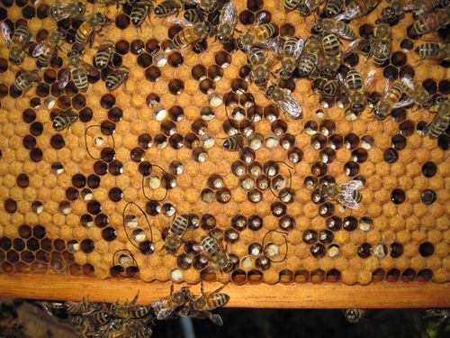
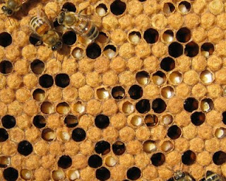
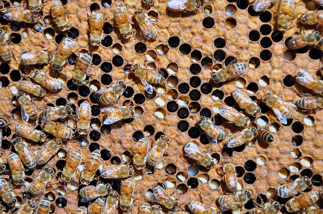
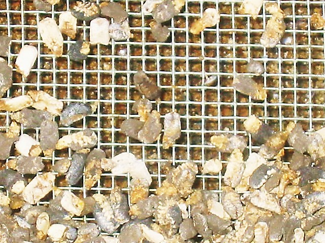
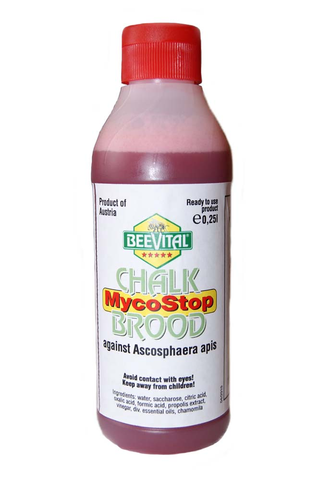

Chalkbrood kills the brood of the honeybee by fungal spores infecting the gut of the larvae, and eventually kills all the brood if not disposed properly. It kills them by consuming the body, it then grows white hair, called mycelia, which hardens and becomes a hard mummy-like brood on the bottom of the hive. It is on the increase throughout the world.

The cause is the fungus Ascosphaera apis. It spreads through the broods food, and eventually gets larger. The fungus starts in the soil, and any litter, and can go up through the crop, which the brood consume. The fungus is ingested into the brood during feeding, and then effects its guts, and soon, engulfs the body.

Some symptoms of this disease are larvae that are white and moldy, hard, and white grey/black mummies in cells on the floor, or in the front of the hives. These symptoms are commonly found in a Chalkbrood infested hive. You can diagnose this fungus by looking at the entrance, in some cases.

The larvae will grow a white fungal fluff called mycelia. The cap of the cells are brighter than normal, and don't cover the whole cell. When the larvae are infected, they will get harder and harder until they are dried out. Also, the adult bees take the larvae out of the cell and bring the white/gray mummies to the floor of the hive or outside of the hive.

To control/fix this problem here are some simple steps: 1.Clean out all of the infected brood, inside or outside the hive. 2.Wreck infected combs/cells that Chalkbrood was in. 3.Air out the hive. 4.Feed all disease free supplements. 5.If case is bad enough, re-queen the hive. 6.Use clean hive tools next time you interact with it, just incase the old tools are infected. 7.Treat with a Chalkbrood killer.

http://www.daff.qld.gov.au/27_10634.htm
http://www.users.globalnet.co.uk/~msbain/elbka/Diseases/Chalk%20Brood.htm
http://www.modernbeekeeping.co.uk/products/chalk-brood-treatment